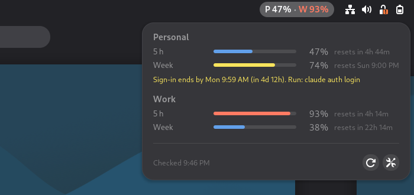
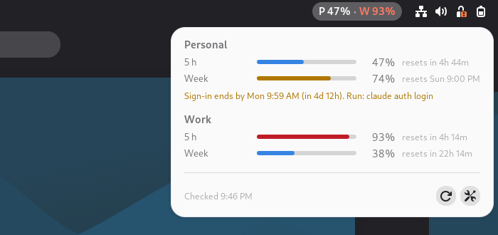
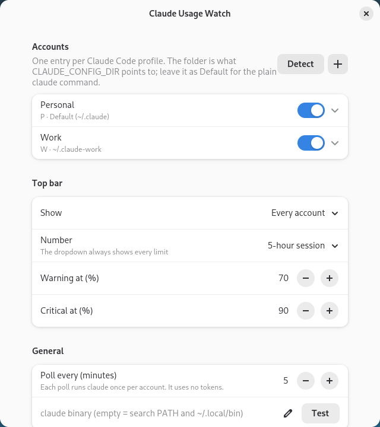

What it shows
Other usage extensions read one ~/.claude folder. This one reads any number of Claude Code profiles, for example a personal and a work subscription.
Every account at once
Add one entry per CLAUDE_CONFIG_DIR folder. Each gets a label and a short tag for the top bar.
Colour at a glance
A tag such as W 93% turns yellow at 70 % and red at 90 %. You set both thresholds.
Reset times
Each bar shows when its limit resets: a countdown for the next hours, the day and time for later resets.
Sign-in warnings
The dropdown warns 5 days before a sign-in ends, and shows the exact claude auth login command for that profile.
No tokens used
/usage is a local Claude Code command. A poll takes about one second and costs nothing.
No clutter
Polls write no session transcripts, skip your hooks, plugins and MCP servers, and never start a Claude Code update.
How it works
Every 5 minutes the extension runs this command once per account, one account after another:
claude -p --no-session-persistence --setting-sources "" --output-format json /usage- For the default profile the extension leaves
CLAUDE_CONFIG_DIRunset. For other profiles it sets the variable to the profile folder. - The command runs in
~/.cache/claude-usage-watch, so it reads no project'sCLAUDE.md. - Before each run the extension checks that the profile has a
.credentials.jsonfile. A mistyped folder never becomes a new, empty profile. - A command that hangs is stopped after 20 seconds, together with its child processes.
- If a poll fails, the dropdown keeps the last numbers and marks them as stale. The extension retries, and waits longer after each failure in a row.
Install
You need GNOME Shell 48 and Claude Code, signed in with a Claude subscription in each profile you add.
- Download
claude-usage-watch@vdw.github.io.shell-extension.zipfrom the latest release. - Install it:
gnome-extensions install --force \ claude-usage-watch@vdw.github.io.shell-extension.zip - Log out and log in again. Wayland sessions load new extensions only at login.
- Enable it:
gnome-extensions enable claude-usage-watch@vdw.github.io - Open the preferences and click Detect. It adds every
~/.claudeand~/.claude-*folder that has credentials.

Troubleshooting
| Dropdown says | Do this |
|---|---|
| Signed out | Run claude auth login with that profile, for example CLAUDE_CONFIG_DIR=~/.claude-work claude auth login. |
| No credentials | Check the folder in the preferences. |
| CLI not found | Set the path to claude in the preferences. GNOME Shell's PATH often lacks ~/.local/bin. |
| stale since … | The last poll failed. The numbers are from the time shown. The extension retries on its own. |
Logs: journalctl -f -o cat /usr/bin/gnome-shell. Report problems on GitHub.